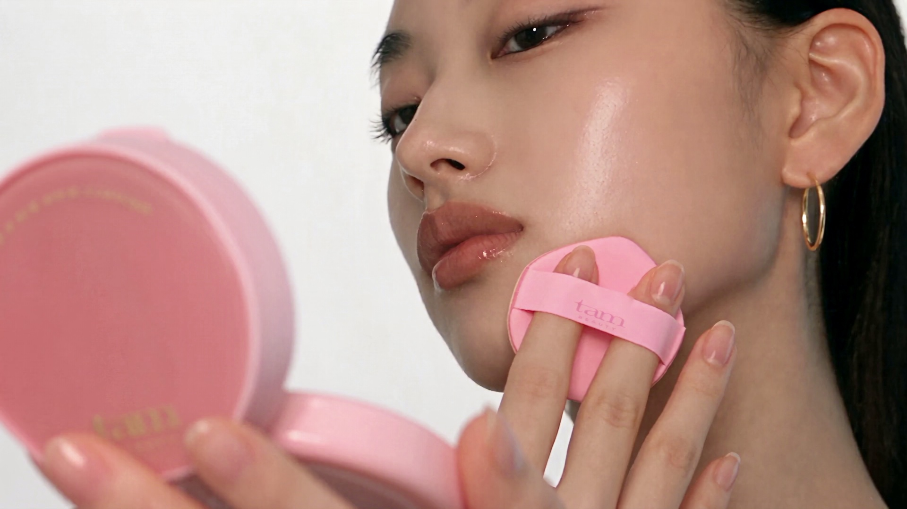
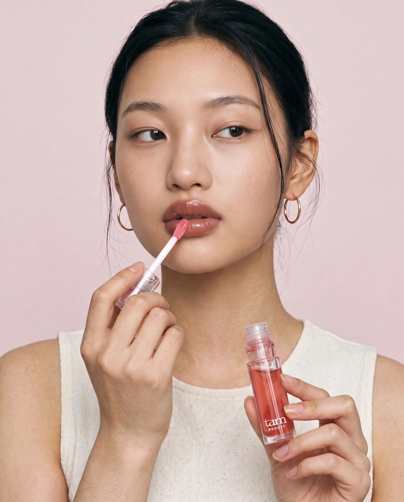

카테고리 기능과
브랜드 표현을 구분
디올·클라랑스의 립오일은 윤기와 케어, 어플리케이터 사용성을 함께 설명합니다. 탐도 발색만으로 시작하지 않고 립오일을 사용하는 이유를 먼저 보여주도록 정리했습니다.
힌스의 크기 대비, 딘토의 캠페인 통일감, 라네즈의 제형 표현을 별도로 분석했습니다.
홈페이지 모델을 참고한 도포 장면, 넓은 팁의 사용 방식, 촉촉함과 시원한 젤리광. 발색보다 먼저 제품을 쓰는 이유를 설명하는 여섯 챕터로 다시 구성했습니다.
홈페이지 메인 필름 포스터와 같은 영상 제작에 사용된 정면 레퍼런스를 Higgsfield에 함께 넣었습니다. 눈매, 코와 입술의 비율, 검은 머리와 골드 후프를 기준으로 유지하고, 피부 결·미세한 비대칭·잔머리를 지시했습니다. 참고 기반 생성이므로 원본 얼굴과 완전히 동일하다는 뜻은 아닙니다.


턱 옆에 제품만 드는 포즈를 도포 동작으로 바꿨습니다. 사진에서는 얼굴·손·팁·열린 병이 함께 보이고, 텍스트는 얼굴이나 제품을 덮지 않습니다.
| 순서 | 역할 | 보여줄 것 | 고객이 알게 되는 것 |
|---|---|---|---|
| 01 | 첫 인상 | 홈페이지 모델 기준 도포 + 실제 팁 | 넓은 팁·쿨터치·촉촉한 젤리광을 먼저 인지 |
| 02 | 바르는 도구 | 큰 팁 매크로 + 첫 화면 실제 팁 | 넓은 면과 둥근 끝을 어떻게 쓰는지 이해 |
| 03 | 립오일을 쓰는 이유 | 광택 모티프 + 실제 제형 | 촉촉함·시원한 사용감·젤리광, 성분은 짧게 |
| 04 | 컬러 선택 | 공식 제품과 실제 1회 발색 | 퍼스트 러브 / 인피니트 로즈 / 나이트 뷰 비교 |
| 05 | 사용 장면 | 단독 사용 / 립 컬러 위 | 원하는 마무리에 따라 사용하는 방법 |
| 06 | 기억할 제품 | 세 컬러 트리오 | 품명·용량·컬러와 상세정보 확인 |
중심 메시지: 넓고 둥근 팁으로 펴 바르고 → 시원한 사용감을 느끼고 → 촉촉한 젤리광으로 마무리. 이 조합을 탐의 구매 이유로 제시하되, 타 브랜드에 없는 유일한 기능이라고 주장하지 않습니다.
디올·클라랑스의 립오일은 윤기와 케어, 어플리케이터 사용성을 함께 설명합니다. 탐도 발색만으로 시작하지 않고 립오일을 사용하는 이유를 먼저 보여주도록 정리했습니다.
힌스의 크기 대비, 딘토의 캠페인 통일감, 라네즈의 제형 표현을 별도로 분석했습니다.
힌스처럼 인물과 팁의 크기를 대비하고, 딘토처럼 모델·제품의 분위기를 연결했습니다. 제품 트리오는 클로징에 한 번만 사용합니다.
라네즈에서 참고한 것은 제형을 매력적으로 보여주는 방식입니다. 도넛·사과 등의 소품과 타사 성분 설명은 가져오지 않았습니다.
완성 화면을 힌스·딘토·라네즈 자료와 다시 대조했습니다. 첫 화면 문구의 구체성, 큰 팁과 인물의 크기 대비, 컬러 영역의 길이, 제형 모티프의 전달력을 점검했습니다.
첫 화면 실제 팁, 유리 모티프 교체, 실제 제형 확대와 사용법 색면을 반영했습니다.
힌스 미러 듀 글로스와 딘토 미러리스 립 글로스는 인접 카테고리의 비주얼 레퍼런스입니다. 디올·클라랑스는 직접적인 립오일 메시지 참고입니다. 올리브영 직접 페이지는 접근이 제한되어, 브랜드 공식 자료와 앞서 확보한 공식 상세 이미지로 비교했습니다. 시장 전체 순위나 매출 우열을 판단한 분석은 아닙니다.
| 브랜드 / 제품 | 관찰한 강점 | 탐에 적용한 방식 |
|---|---|---|
| 힌스 / 미러 듀 글로스 | 완드·인물 크기 대비, 기능별 이미지 | 도포 인물 뒤에 팁 확대, 실제 팁 사진 병기 |
| 딘토 / 미러리스 립 글로스 | 모델·소품·컬러의 일관된 캠페인 | 홈페이지 모델, 페일 로즈 톤과 투명감 통일 |
| 라네즈 / 글레이즈 크레이즈 | 이름과 연결되는 광택·제형의 시각화 | 젤리광을 보여주는 소재 연출, 실제 제형 별도 |
| 클라랑스 / 립 컴포트 오일 | 편안한 사용감과 바르는 방식 설명 | 팁의 면/끝 사용법, 단독/덧바르기 안내 |
| 디올 / 립 글로우 오일 | 케어와 윤기를 함께 제시 | 촉촉함을 앞세우고 성분 함유 사실만 짧게 |
구성 단계와 화면 제작 후 두 번 독립 자문을 요청했습니다. 비대화식 실행에 --no-session-persistence를 적용해 로컬 Claude Code 세션 이력이 남지 않도록 했습니다. 이 옵션이 제공자의 서버 측 데이터까지 삭제한다는 뜻은 아닙니다.
2차 검토 후 실제 수정: 첫 화면으로 공식 팁 사진을 이동하고 헤드라인을 ‘넓게 쓸어 바르는 촉촉한 젤리광’으로 바꿨습니다. 딱딱한 유리 모티프는 제외하고 오일을 펴 바른 광택 연출로 재제작했습니다. 실제 제형 사진은 더 키웠으며, 팁 챕터의 중복 설명을 줄이고 사용법에 로즈 색면을 넣어 흐름을 나눴습니다.
모델 재생성 중에는 원본에 없던 주근깨와 바뀐 완드가 나타난 컷도 있어 제외했습니다. 원본 얼굴의 비율과 제품을 유지하는 국소 보정 방향으로 다시 검토했습니다. AI 팁 확대는 실제 구조를 참고한 캠페인으로만 사용하고, 형상 확인의 기준은 첫 화면의 공식 실제 팁 사진입니다.
쿨링 성분의 기전 설명을 추가하라는 제안은 채택하지 않았습니다. 이번 성분 설명은 확인한 두 오일의 함유 사실에 한정했습니다. 아래 2차 원문은 수정 전 화면을 검토한 결과이며, 수정본에 대한 Claude 승인으로 해석하지 않습니다.
결론부터: V3는 사진 몇 장을 바꿀 문제가 아니라 챕터 구조와 이미지 역할을 다시 짜야 하는 문제입니다. 열람 범위: V3 스크린샷과 힌스·딘토·라네즈 콘택트시트 네 장은 모두 확인했습니다. 홈페이지 필름 모델 원본, 공식 발색 자료, V2 시안은 받지 못했고, 390px 프리뷰의 작은 본문은 일부만 읽혔습니다. 얼굴 동일성과 발색 자료 해상도는 판단에서 제외합니다. ## V3 진단과 제안 반론 - 히어로가 포즈이지 행동이 아닙니다. 병을 볼 옆에 들었을 뿐 넓은 팁이 화면에 없고, "한 겹 더, 탱글하게"는 어느 글로스에나 붙는 문장입니다. 캡션의 "탱글해지는 플럼핑"은 결과 주장이라 수정 대상입니다. - 빅팁 섹션의 완드는 병과 분리된 3D 렌더에 오일 한 방울을 떨어뜨린 그림입니다. 딘토와 힌스가 똑같이 쓰는 연출이고, 크기 기준이 없어 "넓다"가 눈으로 확인되지 않습니다. - 전 섹션이 소제목, 헤드라인, 두 줄 본문, 사진 또는 01/02 리스트 순서로 같은 박자입니다. 가장 차별적인 쿨 터치 섹션만 이미지 없는 텍스트 띠입니다. 거꾸로 됐습니다. - 스케일 대비가 없습니다. 힌스는 거대 완드 옆 작은 모델, 딘토는 사과 대 병, 라네즈는 텍스처 매크로 대 튜브 트리오로 리듬을 만듭니다. V3는 끝까지 중간 샷입니다. - 쉐이드 섹션이 같은 각도 입술 렌더 세 장으로 페이지 4분의 1을 차지하고, 세 병 사진이 중간과 끝에 두 번 그대로 나옵니다. "젤리 컬렉션"이라는 이름이 비주얼로 번역된 곳이 없습니다. 제안 7섹션의 2·3·4·6번은 모두 보습과 광택을 다시 말하고, 완드는 1·3번에, 세 병은 2·7번에 중복됩니다. 보습은 립오일 카테고리의 기본값이라 헤드라인에서 내려야 합니다. TAM이 소유할 수 있는 조합은 "넓은 팁으로 쓸어 바른다, 닿는 순간 시원하다, 젤리 같은 오일광"입니다. 셋 다 확인된 사실이고, 디올·클라랑스는 팁은 말해도 쿨 터치와 젤리광을 한 세트로 묶지 않습니다. "콕콕 찍지 않고 쓸어 바르는 립오일"은 행위 서술이라 성능 주장 없이 차별화됩니다. ## 최종 아키텍처 860px, Pretendard, 페일 로즈와 화이트 유지. 블록 여섯 개, 블록마다 지배 이미지 하나, 본문 두 줄, 캡션 한 줄이 상한입니다. - 00 히어로 860×1080. 필름 모델이 넓은 완드를 아랫입술 중앙에 대고 쓸어 바르는 순간, 손과 병이 함께 보입니다. 배경은 단색이 아니라 찬 흰빛이 도는 로즈 그라데이션. 헤드라인 "넓게 쓸어 바르는 립오일." 본문 "넓고 둥근 팁이 입술을 감싸듯 펴 바르고, 닿는 순간 시원하게 젤리 같은 윤기를 남깁니다." 하단에 01 넓은 팁 / 02 쿨 터치 / 03 젤리 글로우 인덱스 띠. 이 띠가 제안 2번을 대체합니다. - 01 팁 챕터 860×900. 뚜껑 연 실제 병을 좌하단에 작게, 완드는 대각선으로 프레임 밖까지 크게. 헤드라인 "콕콕 찍지 않습니다. 쓸어 바릅니다." 본문 "넓은 면이 입술 폭을 따라 펴지고, 둥근 끝이 입술선 안쪽을 정리합니다." 우하단 160px에 공식 완드 사진 인셋, "실제 어플리케이터" 라벨. 비교 숫자 없음. - 02 쿨 젤리 글로우 860×860, 좌우 430 분할. 왼쪽은 차갑게 맺힌 투명 젤리 위로 오일이 흐르는 캠페인 렌더, 오른쪽은 같은 모델 입술 클로즈업에 찬 사이드 라이트. 헤드라인 "닿는 순간 시원하고, 젤리처럼 탱글해 보입니다." 본문 "쿨한 사용감과 오일의 윤기가 입술을 촉촉하고 도톰해 보이게 연출합니다." 캡션 "해바라기씨오일·녹차씨오일 함유" 11px. 성분 이야기는 여기서 끝. - 03 쉐이드 860×760, 3열 260. 열마다 병, 공식 발색 칩 140px에 "실제 발색" 라벨, 이름, 한 줄 무드. 헤드라인 "같은 윤기, 세 가지 온도." 입술 렌더는 중앙 상단 한 장만. - 04 착용 860×700, 좌우 430. 같은 모델, 같은 앵글 두 컷. 왼쪽 맨 입술 단독, 오른쪽 립 컬러 위 탑코트. 헤드라인 "혼자서도, 위에 올려도." 캡션 "한 번 쓸어 바른 양으로 시작하세요." 단계 리스트 삭제. - 05 클로즈 860×620. 세 병 트리오가 처음으로 정면 등장, 품명, 4.3 ml, 세 컬러명, 정보 토글. 중간의 세 병 사진은 모두 제거. ## 핵심 수정 5와 근거 공백 1. 히어로를 포즈에서 행동으로. Higgsfield 프롬프트에 필름 모델 레퍼런스 이미지, 4분의 3 앵글, 85mm, 피부 결 유지, 실제 TAM 병과 넓은 플로킹 팁이 아랫입술에 닿는 순간을 명시. 네거티브에 아이돌풍 범용 얼굴, 과한 속눈썹, 유리알 피부. 크로스리뷰 체크 항목은 팁 형태, 병 비율, 손가락 수, 입술 투명도, 필름 스틸과의 동일성. 2. 캠페인 장치를 "찬 투명 젤리와 오일 흐름" 하나로 통일하고 02 챕터와 쉐이드 배경에 반복. 라네즈 도넛처럼 성분이 아닌 이름 모티프이며, 모든 렌더에 "캠페인 연출 이미지" 라벨. 3. 스케일 리듬 고정. 거대 완드, 작은 병, 매크로 텍스처, 모델 중간 샷을 교대로 두고 중간 샷이 연속되지 않게. 4. 입술 렌더 세 장을 공식 발색 칩으로 교체. 저해상도는 AI 업스케일하지 말고 작게 쓰는 편이 신뢰를 삽니다. 5. 텍스트 전용 띠 전면 삭제. 사용 단계, 포뮬러 노트, 쿨 터치 띠 모두 챕터 캡션으로 흡수. 근거 공백: - 넓은 팁: 폭 수치와 비교 기준 없음. 서술과 실물 사진으로만 입증하고 "한 번이면 완성" 류 성능 문장 금지. - 쿨 터치: 사용감은 확인, 기전 미확인. "쿨링 성분" 금지, "시원한 사용감"으로 고정하고 공식 원문 문구 재확인. - 플럼핑: 품명은 고유명사로 허용, 본문은 "도톰해 보이는 메이크업 효과"까지. 전후 비교 없음. - 성분: 함유 사실만. 퍼센트, 효능, 벚꽃 추출물 금지. - 지속력, 무자극: 자료 없음. 해당 계열 문구가 있으면 삭제. - 모델 동일성: 필름 원본 미열람이라 제가 검증 못 함. 크로스리뷰마다 필름 스틸을 나란히 첨부하십시오.
## 결론 V4는 V3보다 분명히 나아졌지만 승인 수준은 아닙니다. 가장 큰 문제는 첫 화면이 '탐 립오일'이 아니라 '어떤 K뷰티 글로스'로 읽히는 점과, 실물 증거는 전부 썸네일로 밀리고 AI 연출이 대형을 차지하는 신뢰 구조입니다. 검토 범위 한계를 먼저 밝힙니다. 모바일 확대본은 01, 03, 04만 봤고, 02 빅팁, 05 사용법, 06 클로징은 860px 축소 전체본으로만 봤습니다. 축소본 기반 판단은 그렇게 표시했습니다. ### 우선순위 결함 **1. 첫 화면에 '큰 팁'이 보이지 않는다.** 헤드라인과 서브가 "넓게 감싸고", "넓고 둥근 팁으로"라고 두 번 말하지만, 모델 컷에서 어플리케이터는 입술 아래로 기울어져 팁 끝이 가려지고 와인드는 가는 흰 선으로만 보입니다. 오른손의 병도 프레임 구석에 작습니다. 첫 뷰포트에서 눈에 들어오는 것은 '모델이 립 바르는 포즈'뿐이고, TAM만의 요소는 아래 USP 텍스트 띠가 혼자 설명합니다. 힌스가 첫 컷에서 제품과 글로스 드립을 모델보다 크게 두고, 딘토가 사과 오브제로 첫 화면에 브랜드를 박는 것과 비교하면 TAM 히어로는 기억에 남는 시각 단서가 없습니다. 팁을 카메라 쪽으로 돌린 컷이나 입술 위 팁 매크로를 히어로 안에 붙여, 스크롤 전에 팁이 보여야 합니다. **2. 실물 증거가 썸네일, AI 연출이 주인공.** 02에서 실제 어플리케이터 사진은 소형 카드이고 AI 팁 확대가 섹션 전체를 차지합니다. 03도 같은 구조로, 실제 제형 사진이 우하단 작은 카드이고 AI 유리가 대형입니다. 두 섹션이 '대형 AI 위, 우하단 소형 실물 아래' 모듈을 그대로 반복해 템플릿 느낌이 나고, 가장 믿을 만한 자료가 가장 작습니다. 특히 축소본에서 02의 AI 팁은 둥글게 부푼 구형에 알갱이 질감인데, 실제 사진 썸네일은 넓적한 플로킹 스패출러 형태로 보입니다. 핵심 USP의 형태가 AI에서 왜곡됐을 가능성이 있으니 tip.png 원본과 대조가 필요합니다. 클로징 트리오에도 유리판 위 제형 스미어가 들어 있어, 04의 실제 발색 바로 뒤에 AI 질감이 한 번 더 나옵니다. 캡션은 있지만 증거처럼 읽히는 위치입니다. **3. 유리 모티프는 '맑음'은 전하지만 '젤리'와 '시원함'은 전하지 못한다.** 03의 유리 숟가락 형태는 투명하고 단단한 물성이라 탱글한 젤리와 반대 방향입니다. 서리나 결로 같은 쿨 터치 단서도 없고, 뒤에 놓인 보라 유리 조각은 의미가 없습니다. 이질적이라고까지는 못 하지만 설명력이 낮고, 페이지에서 제품이 안 나오는 유일한 대형 컷입니다. 라네즈가 글레이즈 흐름과 스미어로 질감을 보여주고 딘토가 입술 매크로로 광을 보여주듯, 이 섹션의 주역은 실제 제형 사진이어야 합니다. 덧붙여 전성분에 멘틸락테이트와 에틸멘탄카복사마이드가 들어 있습니다. 두 오일을 적듯 '시원한 사용감을 주는 성분' 한 줄을 사실 범위에서 더하면 쿨 터치가 텍스트 주장에서 성분 근거로 바뀝니다. 효능 수치나 지속 표현은 넣으면 안 됩니다. **4. 얼굴의 일반화가 반쯤 남아 있다.** 후프 귀걸이, 뒤로 넘긴 머리, 흰 배경은 홈페이지 필름과 이어집니다. 그러나 원본은 피부에 유분 광과 질감이 있고 입술이 브라운 로즈로 살짝 비대칭인데, V4 모델은 피부가 보정 앱처럼 매끈하고 눈이 더 크고 대칭이며 입술이 더 도톰하고 핑크합니다. 성형 수준은 아니지만 '보정된 광고 얼굴'로 중화됐습니다. 흰 탱크톱에 연핑크 배경 조합은 힌스 모델 컷과 거의 같은 문법이라 브랜드 구분도 약합니다. **5. 카피와 색면의 단조로움.** 여섯 섹션 헤드라인이 전부 "A하고, B하게" 두 구절 리듬입니다. 첫 두 섹션 안에서 '넓'이 다섯 번, '감싸'가 세 번 나옵니다. 배경은 처음부터 끝까지 연핑크 파스텔이라 대비 지점이 없습니다. 딘토의 빨강, 라네즈의 보라처럼 한 섹션만이라도 채도를 올리거나 어두운 면을 두면 리듬이 생깁니다. 구조 자체는 V3보다 다양해졌으니, 반복은 레이아웃보다 카피 리듬과 색면에서 옵니다. ### 질문별 답 - **첫 화면에서 왜 TAM인지:** 느껴지지 않습니다. 로고와 병 라벨만 브랜드를 말합니다. - **단조로운 반복인지:** 레이아웃은 아닙니다. 카피 리듬, 02와 03의 모듈 반복, 단일 색면이 문제입니다. - **유리 모티프:** 이질적이기보다 약합니다. 실제 제형 사진 뒤로 보내거나 빼도 됩니다. - **얼굴 일반화:** 소품과 헤어는 이어지고, 피부와 입술은 보정됐습니다. ### 유지할 점 - **04 컬러 섹션.** 공식 실물 병과 1회 도포 발색, 명확한 캡션. 페이지에서 가장 신뢰도 높은 부분입니다. - **정직한 표기.** AI 컷마다 붙은 연출 표기와, 사용법을 텍스트로만 처리해 가짜 전후 증거를 만들지 않은 결정. - **카피 안전성.** 금지 표현 없는 문장, 두 오일 성분 한 줄, 전성분 전문 수록. - **홈 필름 연결 시도.** 후프 귀걸이와 헤어 스타일로 연속성을 만든 방향은 맞습니다. - **USP 띠의 앵커 링크.** 첫 화면에서 해당 섹션으로 바로 가는 구조는 유지할 가치가 있습니다.
검수 범위: 320 / 390 / 600 / 860 / 1440px 화면, 이미지 로딩·가로 넘침·컬러 이동 링크·제품정보 열기. 기술 검사와 자문 결과는 사용자 디자인 승인을 대신하지 않습니다.
Nano Banana 2.1 · 2K · high thinking. 정면·홈페이지 포스터·실제 제품·실제 팁 레퍼런스를 역할별로 지정했습니다. 웹에는 원본 크기를 유지한 WebP를 사용합니다.
Create one identity-preserving TAM Beauty lip oil campaign photograph. INPUT 1 and 2 show the SAME existing adult homepage campaign model: use that exact face and identity, including her elongated almond eyelids, substantial natural lips, recognizable nose and jaw, warm neutral complexion, slick dark hair and small gold hoop earrings. Do not reinterpret as a generic doll beauty, enlarge eyes, reduce jaw, or add freckles. Input 1 is side identity/light reference with a cushion product: REMOVE all cushion/puff/compact items. Input 2 is frontal identity reference. INPUT 3 is the ONLY product packaging identity: the real clear cylindrical TAM 02 rose lip oil, white inner clear outer cap, small white tam BEAUTY label. INPUT 4 shows its actual broad round-ended flocked paddle applicator. Preserve exact bottle and tip geometry, realistic lipstick scale. Photograph the same woman from crown to upper chest, three-quarter face, eyes looking just beside camera as if at a makeup mirror. Confident quiet expression, recognizable angular individuality. Hair pulled back with a few natural strands, simple off-white sleeveless top, understated small gold hoops from the homepage. Do not change to pink knit or an unrelated influencer. Action: one hand holds the detached clear cap and white wand, the broad rounded applicator lightly touching the CENTER of the LOWER lip from a diagonal side approach, never inserted into mouth. The lips show a thin clear rose oil sheen, natural lip lines, not an opaque tint result. Her other hand holds the open correct TAM bottle comfortably below chin, label facing viewer, normal hand anatomy. Mouth, eyes and bottle all visible and in focus. No extra objects. Framing: elegant 4:5 editorial portrait; crown not cropped, entire jaw visible. Face occupies upper 65%, hands/product lower 35%, enough clean margin. No text over face. Seamless extremely pale dusty rose studio backdrop. 85mm portrait, f/5.6, large soft daylight key camera left, soft natural shadow right. Preserve the homepage model's real pore detail and natural skin variations but reduce broad facial oil hotspots: high shine belongs principally on the lips. Premium believable photograph, not CGI, plastic retouch, airbrush, artificial symmetrical eyelash fans or gritty pore overlay. Realistic warm neutral skin, no whitening, no strong red/orange cast. Only original product logo text; no added writing, border, watermark. Editorial makeup atmosphere, not a clinical result or exact shade demonstration.
One precise premium cosmetic product studio photograph for TAM lip oil BIG TIP section, landscape 3:2. Input 1 is the real TAM 02 rose oil bottle; input 2 is the actual original broad rounded applicator. Preserve identities exactly. The clear cylindrical outer bottle with rose oil reservoir and small white lowercase tam BEAUTY label stands OPEN at bottom-left. The actual detached clear cap with white internal insert and straight white stem extends diagonally from upper-left toward center-right, held just out of frame or suspended for studio photography. Entire generously wide flattened round-end flocked paddle is visible at center-right, its broad face turned to camera, covered with a thin translucent rosy oil film. No huge liquid tongue or dangling gum droplet. The tip must look like a real soft flocked applicator, not glass, metal or a jelly sculpture. Correct physical relationship of stem length, cap size, bottle mouth and tip; no duplicate wand, no impossible assembled parts. Main image should clearly explain the applicator's wide contact surface and rounded end. Composition carefully spaced, product occupies 70% frame; clear breathing room near top-right and lower-right for later HTML labels; no generated text except authentic bottle logo. Neutral pale rose-gray seamless background and matte base, one soft diagonal shadow, restrained bright edge reflections on transparent packaging. High-end real macro product photography, 100mm lens f/11, focus-stacked package and flocking sharp, subtle oil highlights, not artificial CGI chrome. No flowers, fruit, food, ice cubes, hard sparkle, acrylic pedestal, sticker hearts, comparison ruler or badges. 2k detail. Keep product form and actual tip proportions, not exaggerated to imply a measured comparison.
Premium studio beauty still-life for TAM lip oil's oil-glow story and closing collection. Three input photographs are exact official shade bottles: 01 pink, 02 rose, 03 violet. Retain real clear cylindrical tubes, transparent outer caps with white internal insert, actual proportions, horizontal neck rings and small white lowercase tam BEAUTY logo. Each bottle equal physical size. Do not recolor packaging, create extra shades or square metallic bottles. Landscape 3:2, clean editorial overhead three-quarter view. Arrange a loose diagonal fan of the three sealed bottles on a pale dusty rose matte tabletop: pale pink lying diagonally at left, rose bottle tilted gently across middle, violet resting at right; all supported naturally, all three bodies and caps fully visible, labels readable. No floating products. In lower foreground place a shallow, softly curved, very thin translucent pink oil smear on a small clear glass swatch plate, with a few modest specular reflections. Smear is a campaign texture mood, not a viscosity test; no heavy glossy candy, ribbons, water splash or syrup drip. Controlled studio softbox reflections, real transparent-wall refraction, believable shadows. Cool rose and warm ivory palette with generous space, a sophisticated photograph distinct from the previous acrylic-podium arrangement. No fruit, flowers, cloth, hands, face, text additions, price, badges or watermark. Crisp premium 100mm product lens rendering at 2k, actual packaging fidelity more important than dramatic effects.
Create a restrained editorial material still life for a beauty campaign titled cool jelly glow, with NO text. This is an abstract campaign metaphor, not an ingredient photograph, viscosity measurement or efficacy result. Landscape 3:2. One softly curved transparent glass petal resting on a very pale cool ivory studio tabletop; a thin transparent rose-tinted glossy film catches a clean white highlight on the glass surface. A second offset glass curve in the far background softly reflects faint lilac. The composition should feel clear, luminous and quietly cool through light, not literal ice or frozen water. Macro real studio photography, subtle realistic refraction, light caustic line, a smooth tactile sheen, fine natural material imperfections. Main glass form enters from bottom left and sweeps toward center right, spare upper third negative space. Delicate pale pink against cool white, no saturated candy colors, no food, no giant jelly cube, no droplets of condensation, no fruit, no plants, no bottle, no face or lips. Avoid heavy thick goo, ropes, CG chrome and plastic. 100mm macro f/8, high-resolution photographic surface quality, elegant Korean beauty editorial.
Create a premium photoreal cosmetic campaign macro photograph for TAM The Jelly Plumping Lip Oil, a sheer tinted lip oil, aspect ratio 3:2, 2K. ONE dominant actual-looking liquid form: a generous smear of highly viscous clear pale-rose cosmetic oil resting directly on a matte cool ivory flat surface. The smear has a softly rounded swollen leading edge, a shallow pooled central body, a thin translucent feathered trailing edge and one natural fold left by a broad cosmetic spatula that has been removed. Soft curved specular highlights reveal thickness and slippery wet shine. Preserve slight natural irregularities and a few tiny entrapped bubbles. Color is mostly transparent with a restrained rose tint, not opaque paint. Close macro composition with liquid occupying lower two thirds; pale cool neutral space at upper left for type. A subtle lavender-cool side light in the background suggests freshness; no ice or menthol prop. Refined beauty editorial photography, tactile oil and jelly finish, real contact shadow on the surface, optical imperfections, 100mm macro lens, physically coherent reflections. This is an abstract material campaign, not a claimed lab performance demonstration. No humans, lips, face, bottle, labels, lettering, text, diagrams, before-after. Strictly no glass sculpture, glass dish, bowl, spoon, tray, petal, solid resin, plastic, ceramic, geometric slab, chrome, frozen water, food, candy, exaggerated rope of sticky goo, overblown highlights, glitter, repeated droplets. The subject MUST read as wet cosmetic oil with a rounded gel-like sheen, never a transparent object.
Create a photoreal premium Korean cosmetic campaign photograph for TAM lip oil. FIRST TWO REFERENCES ARE THE SAME ADULT HOMEPAGE FILM MODEL AND ARE THE IDENTITY AUTHORITY. Precisely retain her recognizable anatomy from these source photos: narrow naturally hooded almond eyes with the original slightly unequal eyelid opening, original eye spacing, original medium rounded nose bridge and nostril width, fuller lower face and naturally asymmetric brown-rose lips, original lip thickness. Do NOT make eyes bigger or more symmetric, do not narrow the nose, sharpen the jaw or inflate lips. Keep skin warm medium beige with visible real pores and fine microtexture at cheeks/forehead, gentle natural unevenness, slight eye creases and realistic localized sheen. No pore-erasing retouch, plastic beauty filter, porcelain skin, fashion-doll face, CGI-perfect features. Hair dark pulled back with loose irregular strands, small gold hoop earrings, original mature poised expression. Same person, not a newly invented prettier person. Composition: 4:5 portrait, whole head from hair to upper torso, face framed generously, pale neutral warm-gray backdrop with a hint of dusty rose, soft one large side window studio light preserving tactile contrast rather than flat airbrush. Model wears simple ivory ribbed tank. Her gaze is quiet slightly to camera's left, relaxed mouth. She holds an OPEN TAM lip oil bottle in one hand at chest height, label facing front, and its genuine applicator in the other hand beside her lower lip. Capture the moment immediately after applying: tip lifted 8mm away from the side of the lower lip so its ENTIRE broad flocked face is visible to camera, without obscuring lips. The tip must be naturally proportionate to bottle opening and visibly broad and flat with rounded terminal end; not a sphere or narrow pointed tint brush. No invented applicator geometry. Third reference is the actual bottle and fourth reference the ACTUAL TIP SHAPE authority. Preserve cylinder shape, transparent clear thick cap in fingers, white stem, clear cylindrical bottle and subtle TAM lettering. Do not add any new prop. Hands anatomically correct with short natural nails and five fingers, no weird joints. Lips have a modest thin transparent warm rose shine preserving natural lip lines, no exaggerated thick glassy filler effect. High resolution beauty editorial photo, 85mm lens, f/5.6, face and tip in same focus plane, tangible skin, real photography, restrained color grading. No text, no claims, no extra logos, no overlaid layout. Avoid default AI influencer beauty, baby face, extreme makeup, exaggerated eyelashes, perfectly matching catchlights, broad cartoon eyes, overly white teeth, digitally smoothed skin, waxy lips.
A precise localized photographic edit of IMAGE 1, not a new portrait. Keep the entire composition, camera, pose, hair, hoop earrings, clothing, hands, open TAM bottle, white applicator stem, label, pale rose backdrop, lighting direction and crop unchanged. Image 2 is the homepage film model identity reference. Refine ONLY the facial rendering in image 1 to feel like the same person in image 2 with less beauty retouch: retain the subtly hooded narrow almond eye shape and naturally slightly unequal eyelid openings, the broad soft tip of the nose and naturally asymmetric brown-rose lips from image 2. No enlarged eyes, narrowed nose, reshaped jaw or enlarged lips. Restore fine authentic photographic skin microtexture visible in image 2: subtle pores, a small natural crease beneath the eyes, localized skin sheen and gentle unevenness. Keep skin clean and clear, like the source model, without porcelain airbrushing. CRITICAL: Do not invent freckles, beauty spots, moles, acne, scars, speckles, stains, pigment patches, beard stubble, wrinkles or dramatic aging. The source model does NOT have freckles. Do not add a freckle pattern to simulate authenticity. Keep the face's existing natural warm beige complexion and original age. Lip finish should remain a thin sheer layer with real lip lines, modest gloss and original shape. Preserve all product geometry exactly from image 1, especially white wand stem, broad flocked pink tip, clear cylinder bottle and readable TAM mark. No new hand pose, no new wardrobe, no new set, no image collage, no overlay, no text. End result should feel like the same carefully lit real cosmetic photograph with minimal skin retouch, not a new AI person. The actual first image aspect and subject scale must remain unchanged.
GitHub Pages 검토용 상세페이지 · 860px 납품 이미지 포함 · 탐 립오일 V4